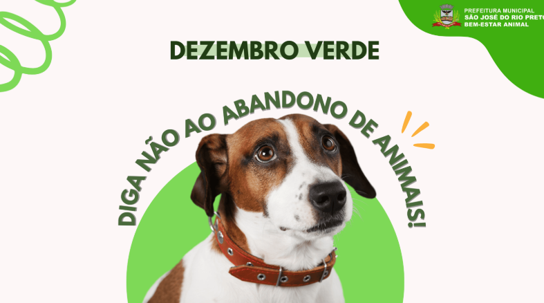
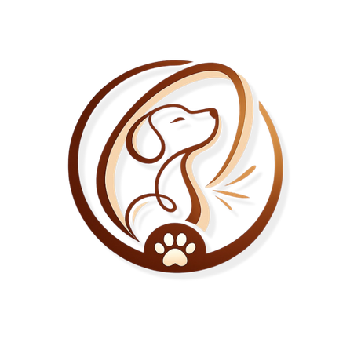

Quem somos
Sobre o Instituto Orelha
Em fevereiro de 2026 nasceu a nossa ONG, ainda sem muita ideia de onde chegaria, nem de quantos animais teria a oportunidade de salvar. Acreditamos que o cuidado começa com o ideal de lutar por aqueles que não podem pedir ajuda, fazendo a diferença na vida de cada animal.
Conheça o que nos moveO que nos move
Cada atitude faz diferença na construção de um futuro mais seguro e acolhedor para os animais.
Adoção responsável
Mais que encontrar um lar, é conectar vidas com amor e compromisso.
Resgate e acolhimento
Cada animal merece cuidado, proteção e a chance de recomeçar.
Bem-estar animal
Respeito, saúde e dignidade devem fazer parte de toda vida.
Apoio e doações
Toda ajuda conta e pode transformar a vida de muitos animais.
Uma comunidade que cuida
Unimos pessoas que acreditam que pequenas atitudes geram grandes mudanças.
Conscientização
Informar e educar é um passo importante para transformar realidades.